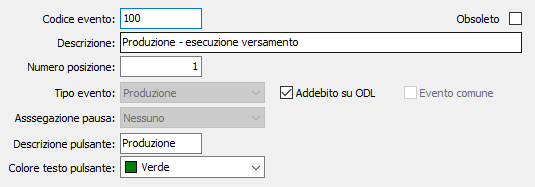

La definizione dell’evento rappresenta la base per il funzionamento di OS1BMJob; per ogni evento è possibile specificare, oltre i dati descrittivi, la descrizione ed il colore da attribuire al testo del pulsante, la tipologia dell’evento: produzione, setup, rettifica, fermo macchina, turno, pausa operatore, rilavorazione; se l’evento è comune a più utenti e se debba essere addebitato sull’ODL.
Il campo "Assegnazione pausa", utilizzato dall'analisi efficienza per il calcolo dei tempi (si rimanda all'apposito capitolo del manuale di OS1 per le specifiche), attivo solo per gli eventi pausa, serve a differenziare le pause tra "Tempo non operativo" e "Fermo programmato".
L'evento definito comune, la possibilità è attiva solo per gli eventi di tipo Pausa, potrà essere utilizzato solo da un operatore con caratteristiche di responsabile (si rimanda all'apposito capitolo del manuale di OS1 per le specifiche).
